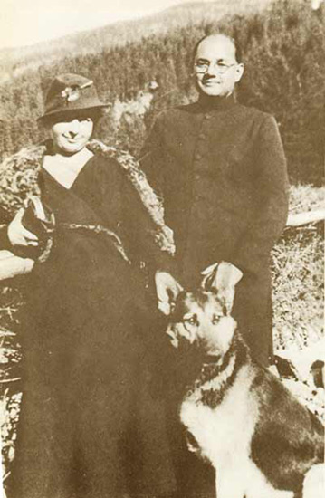
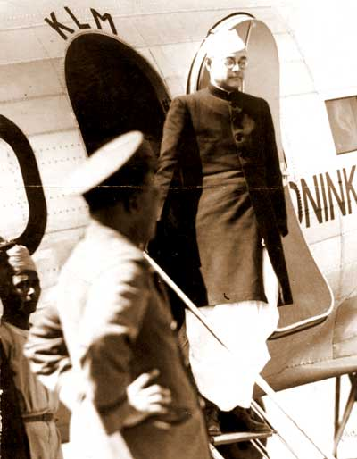
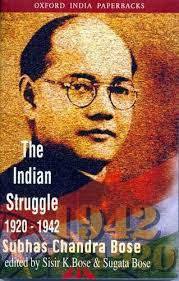

Subhas Chandra Bose-The Political leader
Subhas Chandra Bose was an Indian nationalist whose defiant patriotism made him a hero in India, but whose attempt during World War II to rid India of British rule with the help of Nazi Germany and Imperial Japan left a troubled legacy.
- Born: 23 January 1897,Cuttack
- Died: 18 August 1945,Taiwan
- Spouse: Emilie Schenkl
- Education: Scottish Church College (1918), Presidency University
- Parents: Janakinath Bose, Prabhabati Bose
- Nationality:Indian
Netaji Subhas Chandra Bose (23 January 1897 – 18 August 1945) is one of the most celebrated freedom fighters of India.
Early life
Subhas Chandra Bose was born on 23 January 1897 in Cuttack, Orissa Division, Bengal Province, to Prabhavati Dutt Bose and Janakinath Bose.
He was the ninth in a family of 14 children.
Early Education
He was admitted to the Protestant European School in Cuttack, in January 1902. He continued his studies at this school which was run by the Baptist Mission up to 1909 and then shifted to the Ravenshaw Collegiate School.
After securing the second position in the matriculation examination in 1913, he was admitted to the Presidency College where he studied briefly.
Higher Education
Bose left India for Europe on 15 September 1919, arriving in London on 20 October for the Indian Civil Services (ICS) examination.
He came fourth in the ICS examination and was selected, but he did not want to work under an alien government which would mean serving the British.
He resigned from his civil service job on 23 April 1921 and returned to India.
He was influenced by the teachings of Swami Vivekananda and Ramakrishna after reading their works at the age of 16. He felt that his religion was more important than his studies.
Begining of Politicalcarrier
1921–1932: Indian National Congress
He started the newspaper Swaraj and took charge of publicity for the Bengal Provincial Congress Committe.
In the year 1923, Bose was elected the President of All India Youth Congress and also the Secretary of Bengal State Congress.
He was also the editor of the newspaper "Forward", founded by Chittaranjan Das.
Bose worked as the CEO of the Calcutta Municipal Corporation latter he was elected mayor of Calcutta in 1924.In a roundup of nationalists in 1925, Bose was arrested and sent to prison in Mandalay, where he contracted tuberculosis.
In 1927, after being released from prison, Bose became general secretary of the Congress party and worked with Jawaharlal Nehru for independence.
A little later, Bose was again arrested and jailed for civil disobedience; this time he emerged to become Mayor of Calcutta in 1930.he was elected president again over Gandhi's preferred candidate.
Personal life
1933–1937:Writtings, Austria, Emilie Schenkl:
During the mid-1930s Bose travelled in Europe, visiting Indian students and European politicians, including Benito Mussolini. He observed party organisation and saw communism and fascism in action.
In this period, he also researched and wrote the first part of his book The Indian strugle which covered the country's independence movement in the years 1920–1934. Although it was published in London in 1935, the British government banned the book in the colony out of fears that it would encourage unrest.
During his earlier visit to Germany in 1934,he met Emilie Schenkl and latter maried her who is an austria nationality women in 1937 and these two was blessed with child called Anita Bose Pfaff on 29 November 1942.
Bose lived in Berlin from 1941 until 1943.he left Emilie schenkl and Anita Bose Pfaff without support before his depature in 1945.
Second stage of Bose Politicalcarrier
1937–1940: Indian National Congress:
By 1938 Bose had become a leader of national stature and agreed to accept nomination as Congress President.
He stood for unqualified Swaraj (self-governance), including the use of force against the British. This meant a confrontation with Mohandas Gandhi, who in fact opposed Bose's presidency,splitting the Indian National Congress party.
On 22 June 1939 Bose organised the All India Forward Bloc a faction within the Indian National Congress.When Bose visited Madurai on 6 September, Thevar organised a massive rally as his reception.
He came to believe that an independent India needed socialist authoritarianism, on the lines of Turkey's Kemal Atatürk, for at least two decades.During his sojourn in England Bose tried to schedule appointments with several politicians, but only the Labour Party and Liberal politicians agreed to meet with him.
During his sojourn in Conservative Party officials refused to meet him or show him courtesy because he was a politician coming from a colony. In the 1930s leading figures in the Conservative Party had opposed even Dominion status for India.
"On the outbreak of war, Bose advocated a campaign of mass civil disobedience to protest against Viceroy Lord Linlithgow's decision to declare war on India's behalf without consulting the Congress leadership. Having failed to persuade Gandhi of the necessity of this, Bose organised mass protests in Calcutta calling for the 'Holwell Monument' commemorating the Black Hole of Calcutta.
He was thrown in jail by the British, but was released following a seven-day hunger strike. Bose's house in Calcutta was kept under surveillance by the CID."
Final stage of Bose Politicalcarrier
1941–1943: Nazi Germany:
Bose's arrest and subsequent release set the scene for his escape to Germany, via Afghanistan and the Soviet Union. bose escaped on Late night 16 January 1941.
On 26 January 1941, Bose began his journey to reach Russia through British India's North West frontier with Afghanistan.On 26 January 1941, Bose began his journey to reach Russia through British India's North West frontier with Afghanistan and he was unsatisfied with russian and flew to germany.
in Germany, he was attached to the Special Bureau for India under Adam von Trott zu Solz.He founded the Free India Center in Berlin, and created the Indian Legion (consisting of some 4500 soldiers) out of Indian prisoners of war who had previously fought for the British in North Africa prior to their capture by Axis forces.
Indian Legion was attached to the Wehrmacht, and later transferred to the Waffen SS.
Its members swore the following allegiance to Hitler and Bose: "I swear by God this holy oath that I will obey the leader of the German race and state, Adolf Hitler, as the commander of the German armed forces in the fight for India, whose leader is Subhas Chandra Bose".
Indian Legion was attached to the Wehrmacht, and later transferred to the Waffen SS. Its members swore the following allegiance to Hitler and Bose: "I swear by God this holy oath that I will obey the leader of the German race and state, Adolf Hitler, as the commander of the German armed forces in the fight for India, whose leader is Subhas Chandra Bose".
Bose met Hitler in May 1942, his suspicions were confirmed, and he came to believe that the Nazi leader was more interested in using his men to win propaganda victories than military ones. So, in February 1943, Bose boarded a German U-Boat and left for Japan. This left the men he had recruited leaderless and demoralised in Germany.
his suspicions were confirmed, and he came to believe that the Nazi leader was more interested in using his men to win propaganda victories than military ones. So, in February 1943, Bose boarded a German U-Boat and left for Japan. This left the men he had recruited leaderless and demoralised in Germany.
In 1942, he earned the title 'Netaji', in Germany by the Indian soldiers of the Azad Hind Fauj.
Final moments of bose
1943–1945: Japanese-occupied Asia:
In 1943, after being disillusioned that Germany could be of any help in gaining India's independence, Bose left for Japan. He travelled with the German submarine U-180 around the Cape of Good Hope to the southeast of Madagascar, where he was transferred to the I-29 for the rest of the journey to Imperial Japan. This was the only civilian transfer between two submarines of two different navies in World War II.
Even when faced with military reverses, Bose was able to maintain support for the Azad Hind movement. Spoken as a part of a motivational speech for the Indian National Army at a rally of Indians in Burma on 4 July 1944.
he urged the people of India to join him in his fight against the British Raj.Spoken in Hindi, Bose's words are highly evocative.
The INA's first commitment was in the Japanese thrust towards Eastern Indian frontiers of Manipur. INA's special forces, the Bahadur Group, were involved in operations behind enemy lines both during the diversionary attacks in Arakan, as well as the Japanese thrust towards Imphal and Kohima.
On the Indian mainland, an Indian Tricolour, modelled after that of the Indian National Congress, was raised for the first time in the town of Moirang, in Manipur, in north-eastern India.
This attempt at conquering the Indian mainland had the Axis codename of Operation U-Go.but this make him great leader and named as "NETAJI".
During this operation, On 6 July 1944, in a speech broadcast by the Azad Hind Radio from Singapore, Bose addressed Mahatma Gandhi as the "Father of the Nation" and asked for his blessings and good wishes for the war he was fighting.Operation U-Go ultimately proving unsuccessful.
Bose's Provisional Government's aim of establishing a base in mainland India was lost forever.
Death of Bose
On the day of 18 August 1945
In the consensus of scholarly opinion, Subhas Chandra Bose's death occurred from third-degree burns on 18 August 1945 after his overloaded Japanese plane crashed in Japanese-ruled Formosa.
In Taihoku, at around 2:30 pm as the bomber with Bose on board was leaving the standard path taken by aircraft during take-off,
Bose's body was cremated in the main Taihoku crematorium two days later, 20 August 1945.[91] On 23 August 1945, the Japanese news agency Do Trzei announced the death of Bose and Shidea.[86] On 7 September a Japanese officer, Lieutenant Tatsuo Hayashida, carried Bose's ashes to Tokyo, and the following morning they were handed to the president of the Tokyo Indian Independence League.
On 14 September a memorial service was held for Bose in Tokyo and a few days later the ashes were turned over to the priest of the Renkōji Temple of Nichiren Buddhism in Tokyo. There they have remained ever since.Bose was the real freedom fighter and he will remained forever.
Death Mystery of bose
Still today many of said that bose was killed in flight crash and many are stating that he missed crash,some people saying that he was not accidently he was killed and it still runs as mystery.even some showing proofs that he survived crash,went to coma insipte of treatment he died.
one individual may die for an idea, but that idea will, after his death, incarnate itself in a thousand lives.Finally bose died on 18 august 1945 at the age of 48.
"GIVE ME BLOOD AND I WILL GIVE YOU FREEDOM"
-Subhash Chandra Bose
Here some image gallery of Netaji



Read more....